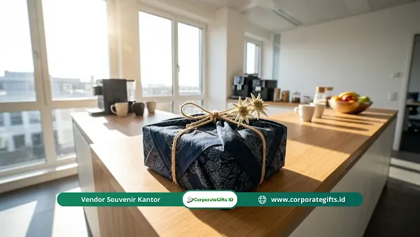

Corporate Gifts ID - Isi hampers lebaran ramah lingkungan yang ideal untuk kantor mencakup set alat makan bambu, tumbler stainless, kopi nusantara organik, sabun natural, dan tas kanvas yang bisa dipakai ulang. Kombinasi ini memangkas sampah plastik sekaligus menampilkan citra perusahaan yang peduli pada kelestarian alam. Tren hampers lebaran 2026 mengarah kuat pada konsep zero-waste dengan bahan yang mudah terurai dan kemasan bebas plastik sekali pakai.
Bagi tim General Affairs (GA) dan Human Resources (HR), memilih isi hampers hari raya untuk ratusan karyawan atau mitra bisnis strategis bukan perkara mudah. Bingkisan yang dipersiapkan tanpa konsep matang sering berakhir sebagai tumpukan kardus tipis dan plastik pembungkus yang langsung dibuang ke tempat sampah. Padahal, ada cara yang jauh lebih elegan, bernilai guna tinggi, dan ramah lingkungan untuk merayakan momen Idul Fitri bersama seluruh stakeholder.
Poin Kunci Hampers Lebaran Ramah Lingkungan 2026:
- Dukungan Terhadap Sustainability: Mengganti kemasan plastik mika dan styrofoam dengan bahan terbarukan seperti besek bambu, kardus daur ulang, atau kain furoshiki.
- Nilai Guna Jangka Panjang: Menyeleksi barang fungsional harian seperti tumbler stainless SUS 304 dan set cutlery bambu.
- Produk Lokal Beretika: Memprioritaskan kopi artisan nusantara, madu hutan murni, dan sabun botani buatan pengrajin lokal bersertifikat.
- Efisiensi Budget Korporat: Menghemat alokasi biaya pengemasan dengan fokus pada kualitas 3 hingga 4 item utama bernilai tinggi.
Mengapa Perusahaan Perlu Beralih ke Hampers Ramah Lingkungan?
Di era penerapan prinsip ESG (Environmental, Social, and Governance) yang semakin ketat, standar profesionalisme perusahaan kini juga dinilai dari kepedulian terhadap lingkungan. Mengadopsi bingkisan hari raya berkelanjutan memberikan dampak positif nyata:
- Memperkuat Brand Reputation: Menampilkan reputasi korporasi yang modern, progresif, dan beretika di mata mitra bisnis dan publik.
- Mendukung Tren Gaya Hidup Zero-Waste: Mengurangi tonase limbah anorganik perkotaan yang biasanya melonjak tajam saat musim perayaan hari raya.
- Sentuhan Personal yang Lebih Tulus: Menghidupkan kembali makna hakiki Idul Fitri sebagai bentuk apresiasi hangat, bukan sekadar kewajiban administratif tahunan.
- Memberdayakan Komunitas UMKM Lokal: Menjalin rantai pasok dengan petani kopi organik, pengrajin anyaman bambu, dan produsen natural wellness lokal.

Aplikasi kemasan ramah lingkungan kain bermotif batik dengan teknik ikat silang dan hiasan bunga kering alami.
Rekomendasi Isi Hampers Lebaran Ramah Lingkungan Berdasarkan Kategori
Berikut ragam opsi produk berkelanjutan yang telah terbukti fungsional, estetik, dan memiliki masa simpan optimal untuk pengiriman korporat:
1. Peralatan Makan & Minum Minim Sampah
Mendorong kebiasaan minim sampah di kantor melalui perlengkapan reusable:
- Set Cutlery Kayu & Bambu: Terdiri dari sendok, garpu, sumpit, dan sedotan bambu dalam kantong kanvas katun serut.
- Tumbler Vacuum Insulated SUS 304: Botol minum termal yang menjaga suhu air panas/dingin hingga 12 jam, awet dipakai bertahun-tahun.
- Cangkir Enamel / Keramik Handmade: Gelas minum berdesain etnik tanpa lapisan kimia berbahaya.
2. Konsumsi Sehat & Kopi Nusantara
Pilihan panganan bergizi yang dikemas dalam wadah kaca guna ulang:
- Kopi Single Origin & Teh Herbal Organik: Biji kopi arabika pilihan dari Toraja atau Gayo berpadu teh chamomile dalam jar kaca bertutup gabus.
- Kue Kering Artisan & Kacang Almond Panggang: Dikemas rapi dalam toples kaca kedap udara tanpa segel plastik berlebih.
- Madu Hutan Murni dengan Sendok Kayu: Sumber nutrisi alami untuk menjaga imunitas tubuh selama beraktivitas.
3. Relaksasi, Wellness & Perawatan Diri
Perlengkapan relaksasi alami untuk menyegarkan pikiran di hari raya:
- Sabun Mandi Botani Alami: Sabun batangan berbahan dasar minyak kelapa murni dengan aroma lavender dan serai, bebas deterjen SLS.
- Lilin Aromaterapi Soy Wax: Lilin minyak kedelai murni yang tidak menghasilkan asap jelaga hitam beracun.
- Handuk Serat Bambu Organik: Handuk kecil bertekstur sangat lembut dengan sifat antibakteri alami.
4. Produktivitas Meja Kerja & Aksesori Harian
Peralatan pendukung produktivitas kerja ramah lingkungan:
- Notebook Daur Ulang Cover Gabus (Cork Notebook): Buku agenda berbahan kertas daur ulang dengan sampul kulit kayu gabus yang unik.
- Plant Kit Meja Kantor: Pot tanaman kecil berbahan sabut kelapa (coco coir) lengkap dengan benih tanaman hias sukulen.
- Tote Bag Kanvas Katun Tebal: Tas serbaguna kuat berdesain minimalis untuk menggantikan kantong belanja sekali pakai.
Tabel Kurasi Paket Hampers Eco-Friendly Berdasarkan Target Penerima
Berikut inspirasi formulasi kombinasi isi hampers ramah lingkungan sesuai profil penerima:
| Tingkat Penerima | Kombinasi Isi Produk | Material & Finishing Kemasan | Perkiraan Budget / Pax |
|---|---|---|---|
| Klien VIP & Jajaran Direksi | Kopi Gayo Organik + Madu Hutan + Tumbler Kayu Bambu SUS 304 + Lilin Soy Wax + Jar Artisan Cookies | Kotak Kayu Pinus Natural Finishing Beewax + Pembungkus Kain Batik Furoshiki | Rp 350.000 - Rp 650.000 |
| Karyawan & Tim Operasional | Set Cutlery Kayu + Tumbler Stainless Matte + Cork Notebook + Camilan Toples Kaca | Hard Kraft Box Daur Ulang + Tali Rami & Bunga Kering Pinus | Rp 150.000 - Rp 275.000 |
| Mitra Vendor & Rekanan Bisnis | Teh Herbal Jar Kaca + Sabun Natural Artisan + Handuk Serat Bambu + Lilin Aromaterapi | Besek Anyaman Bambu Natural + Pita Goni & Plantable Seed Card | Rp 120.000 - Rp 220.000 |
Kesalahan Umum saat Menyiapkan Bingkisan Hari Raya Kantor
Agar pengadaan hampers berjalan sukses tanpa kendala, hindari beberapa kekeliruan yang sering terjadi:
- Memilih Barang Terlalu Subjektif: Hindari memilih pakaian atau parfum karena selera personal tiap individu sangat bervariasi dan berisiko tidak digunakan.
- Menggunakan Kardus Pengiriman Tipis: Kemasan luar yang rapuh rentan penyok saat transit pengiriman ekspedisi, merusak estetika hampers saat tiba di tangan penerima.
- Terlambat Melakukan Pemesanan (H-2 Minggu): Vendor kerajinan dan produsen kustomisasi biasanya menutup kuota pesanan sejak 4 hingga 6 minggu sebelum cuti bersama Idul Fitri.
- Menghilangkan Sentuhan Kartu Ucapan Personal: Kartu ucapan cetak standar tanpa tanda tangan atau pesan hangat terasa dingin dan kaku.
Teknik Mengemas Hampers agar Tetap Estetik dan Minim Sampah
Kemasan luar adalah pintu gerbang impresi visual. Gunakan teknik pengemasan ramah lingkungan yang memancarkan kemewahan alami:
- Seni Bungkus Kain Furoshiki: Menggunakan kain katun berpola batik atau linen yang diikat menyilang. Selain tampak eksklusif, kain tersebut dapat digunakan kembali sebagai serbet atau taplak meja.
- Kotak Anyaman Bambu (Besek Modern): Anyaman bambu yang dirapikan dengan pewarna alami memberikan nuansa tradisional yang otentik dan 100% biodegradable.
- Hiasan Tali Goni & Daun Kering: Mengganti pita plastik sintetis dengan lilitan tali rami serta selipan kayu manis batang atau daun pinus kering.
- Kartu Ucapan Kertas Tanam (Seed Paper): Kartu berbahan kertas daur ulang yang mengandung benih bunga atau herba di dalamnya, siap ditanam ke dalam pot setelah dibaca.
Strategi Menekan Biaya Pengadaan tanpa Mengurangi Kualitas
Pengadaan hampers eco-friendly tetap dapat dieksekusi secara hemat sesuai pagu anggaran instansi melalui langkah taktis berikut:
- Lakukan Pemesanan Lebih Awal (Early Bird): Produsen lokal dan vendor kustomisasi umumnya memberikan diskon volume khusus untuk pemesanan 2 bulan sebelum hari raya.
- Bermitra Langsung dengan Vendor Terintegrasi: Bekerja sama langsung dengan vendor spesialis pengadaan B2B seperti CorporateGifts.ID memotong rantai perantara distributor.
- Prinsip Kualitas di Atas Kuantitas: Mengisi kotak dengan 3 item berkualitas tinggi jauh lebih diapresiasi daripada 8 pernak-pernik murah yang mudah rusak.
- Optimalisasi Branding Minimalis: Tempatkan logo korporat pada hangtag kertas atau ukiran laser kecil agar produk terasa lebih personal dan leluasa digunakan sehari-hari.
Kesimpulan dan Panduan Pemesanan
Beralih ke hampers lebaran ramah lingkungan adalah komitmen nyata perusahaan dalam menjaga kelestarian bumi sekaligus membangun relasi kemitraan bisnis yang bermartabat. Dengan mengombinasikan produk bermutu tinggi, kemasan tanpa plastik, dan ketepatan waktu pengiriman, perayaan Idul Fitri perusahaan Anda akan meninggalkan kesan mendalam yang tak terlupakan.
Rencanakan pengadaan hampers lebaran kantor instansi Anda bersama tim kurator CorporateGifts.ID. Kami menyediakan layanan lengkap mulai dari pembuatan sampel fisik, kustomisasi logo presisi, hingga pendistribusian langsung ke alamat rumah penerima di seluruh Indonesia. Ajukan estimasi biaya resmi melalui formulir permintaan penawaran harga sekarang juga.